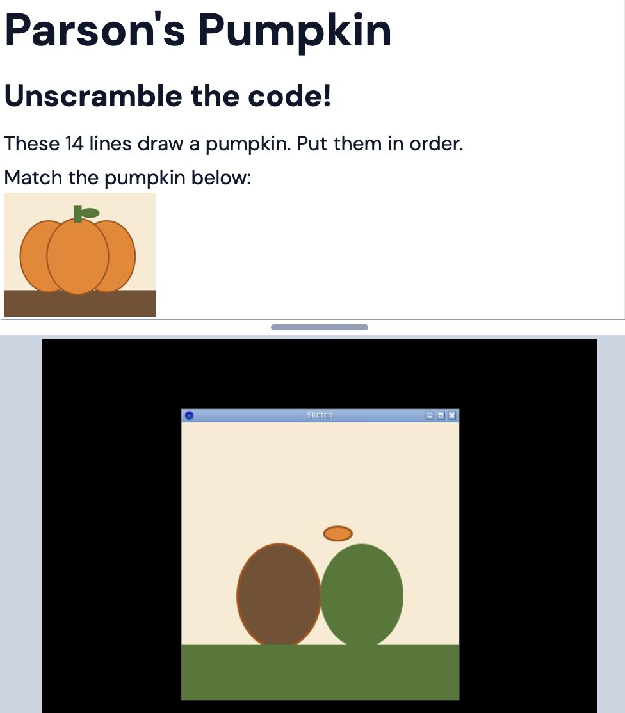
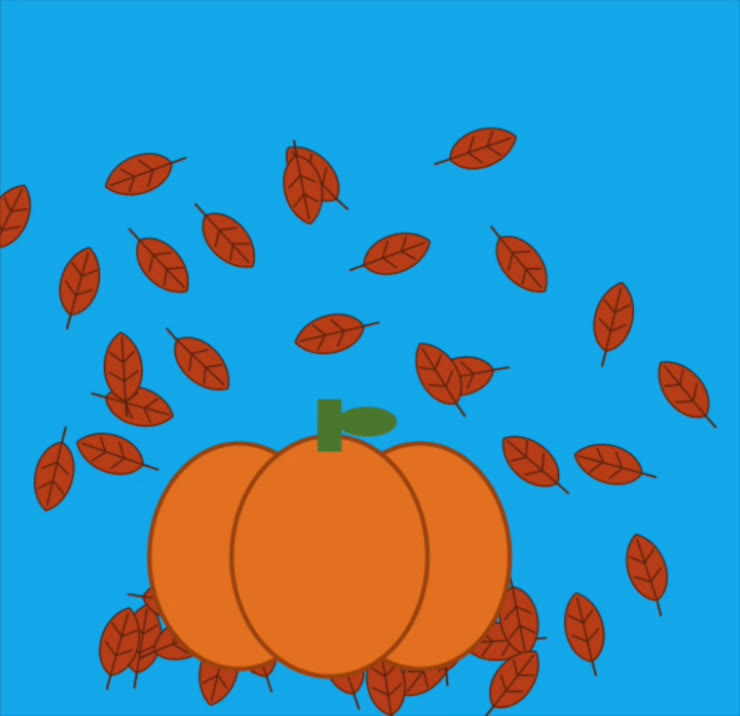

Make state visible
We got to know each other, animated a circle, solved a pumpkin puzzle, watched integer division break a drawing, and toured Art Simon’s AP assignments.
Player not loading? Watch Session 1 on YouTube ↗. The assignment is in Google Classroom.
About this recap: participants are not named on this page. If you would like anything changed or removed here or in the recording, email Saber.
Solve the pumpkin, then build a scene
Try what you have time for. Bring it to the start of Session 2, and post it in Google Classroom if you would like feedback.
- Solve the Parsons pumpkin. Open Visible Java Parsons Pumpkin in Pickcode. Every line is there in the wrong order. Reorder
draw()until it matches the picture. - Compose a stamp scene. Open Visible Java scene in Pickcode. Press
pto stamp a pumpkin andrto start over. Then give the leaf, acorn, tree, and haystack methods keys of their own. - Turn the leaves. Add a random rotation inside
drawLeaf, so that no two leaves fall the same way. - Add your own. Design a method of your own and add it to the scene.

public void draw() {
// unscramble these lines
fill(240, 130, 30);
rect(192, 145, 16, 35);
noStroke();
ellipse(200, 250, 130, 160);
background(250, 235, 210);
stroke(170, 80, 10);
ellipse(225, 160, 40, 20);
fill(120, 80, 50);
ellipse(140, 250, 120, 150);
noStroke();
strokeWeight(3);
fill(80, 120, 50);
rect(0, 320, 400, 80);
ellipse(260, 250, 120, 150);
}
Show the solution
The background comes first, because it paints over everything drawn before it. The ground comes next, then the pumpkin, with the middle ellipse last so it sits in front, and finally the stem and leaf.
public void draw() {
background(250, 235, 210);
strokeWeight(3);
fill(120, 80, 50);
rect(0, 320, 400, 80);
stroke(170, 80, 10);
fill(240, 130, 30);
ellipse(140, 250, 120, 150);
ellipse(260, 250, 120, 150);
ellipse(200, 250, 130, 160);
noStroke();
noStroke();
fill(80, 120, 50);
ellipse(225, 160, 40, 20);
rect(192, 145, 16, 35);
}
What we did
- Introductions. Teachers and artists joined from the US, the UK, and India, working with students from primary school through university. Three themes kept coming up: keeping students engaged once a course turns to plain Java, getting software onto locked-down school machines, and wanting the hardware access and large-file work that a browser handles poorly.
- Processing in ten minutes. Saber toured the editor and built the core idea live:
setup()runs once,draw()keeps looping, andx = x + 1with abackground()call makes animation. - Parsons pumpkin. Joshua Hans shared a puzzle that teaches top-to-bottom order and layering. It also builds the habit of commenting lines out and running code without fear. The
publickeyword appears because Pickcode runs real Java across two files, which Processing normally hides. - Stamp scene.
pushMatrix()andpopMatrix()keeptranslate,scale, androtatefrom affecting other shapes. InsidekeyPressed, students start usingifbecause they want something to happen, before conditionals are formally taught.


When the drawing shows the bug
The pumpkin should land in the center of the canvas. It lands in the corner.
drawPumpkin(width * (1/2), height * (1/2), 1);
1/2 is an int divided by an int, so it evaluates to 0. Joshua’s students write “int divided by int is an int” in big letters in their notebooks, because it always comes up on the AP exam. Changing to 1.0/2 produces a double, which leads straight to casting. A shape in the wrong place is harder to miss than a grade that is slightly off.
Rotation does similar work for random numbers. Leaves should not all fall the same way, and Math.random() is the version that appears on the exam.
int a = (int) (Math.random() * 360); rotate(radians(a));
Art Simon’s year of assignments
Art started using Processing in its beta and taught AP Java with it in San Francisco. Open-ended visual work helped with classroom management, because students at very different places could keep adding features. Seeing each other’s work also pushed them toward original ideas. Art paired Processing with CodingBat, which offers small problems with one right answer. Explore the course site ↗
| Assignment | Java focus |
|---|---|
| Scales | Nested loops, a shape in a function |
| Lightning | Randomness and a random walk |
| Dice | A first class |
| Bacteria | An array of objects and a biased random walk |
| Starfield | A class and an array |
| Asteroids | Inheritance, in a two-month fall project |
| Sierpinski triangle, your own fractal, fractal tree | Recursion |
| Minesweeper | 2D arrays, classes, and recursion |
| AP review | Worksheets and CodingBat sets |
Want a digital rain assignment? Art offered to write a basic AP version of the rain from The Matrix, with a class holding a character, x, and y. Say so in Google Classroom if you would use it. Inheritance is no longer on the AP exam, so Asteroids may need a different place in your year.
Moves to borrow
- Start unplugged. Students sit back to back and describe a robot sketch. Blank paper shows why they need a coordinate grid and precise arguments.
- Comment everything out. Before reordering, bring lines back one at a time and note what each one does.
- Use slips of paper. Students predict the order of the lines before touching the code.
- Work in pairs. Puzzles are better with someone else, and students talk more about visual code than console output.
- Commit on paper before AI. A sketch records a student’s decisions first. Then ask whether they can actually build on what AI gives them, and whether schoolwork has handed the thinking away.
Not covered live, and what’s next
We did not get to predicting and tracing the ball or the plain Java transfer. Both are ready on the Session 1 page.
- Art Simon’s AP course ↗ and CodingBat ↗
- Pickcode ↗, for running Processing and Java in a browser
- Nature of Code Processing examples ↗
- Raspberry Pi Foundation’s code editor and classroom ↗ and Hello World ↗
- Machine Learning for Kids ↗ and Teachable Machine ↗
- GitHub Education for students ↗ and for teachers ↗